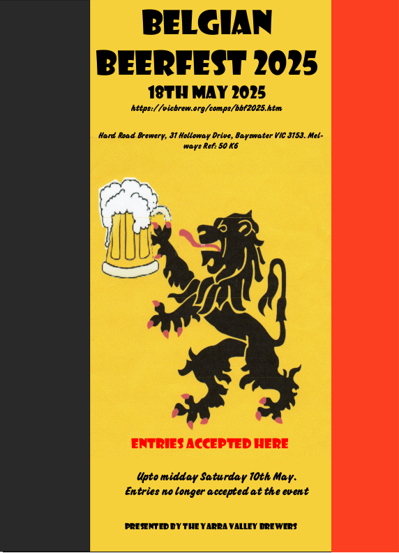

The Annual
Belgian Beerfest Craft Brewing Competition will be held from 9am on Sunday 218h
Ma y2024, at The Hard Road Brewery, 31 Holloway Drive. Bayswater Victoria. Melways
Ref: 50:K6
Entries may be submitted upto midday, Saturday 6th April 2024 at the following collection points:
NOTE: Etries will not be accepted at the event as in previous years
Competition Categories
1. LIGHT COLOURED ALES:
1.1 Trappist Single
1.2 Belgian Blonde Ale
1.3 Belgian Strong Golden Ale
1.4 Tripel
2. DARK COLOURED ALES: (Sponsored by: )
2.1 Dubbel
2.2 Biere De Garde
2.3 Belgian Strong Dark Ale
3. SUMMER ALES: (Sponsored by: The
Full Brew)
3.1 Witbier
3.2 Belgian Pale Ale
3.3 Belgian IPA
4. SAISON:
4.1 Saison
5. WILD BEERS: (Sponsored by: )
5.1 Straight Lambic
5.2 Flanders Brown Ale/Oud Bruin
5.3 Gueze
5.4 Flanders Red Ale
5.5 Fruit Lambic
6. BELGIAN SPECIALTY BEER
6.1 Belgian Speciality (description required)
BEST BEER OF SHOW:
BEST NOVICE BREWER: (Sponsored by Vicbrew)
Competition Forms
Belgian
Beerfest 2025 Entry Form in pdf format.
Style guidlines to be used
at Belgian Beerfest.
Beer
Judging Form to be used at Belgian Beerfest
We hope to see you at the Belgian Beerfest 2024 Craft Brewing Competition.